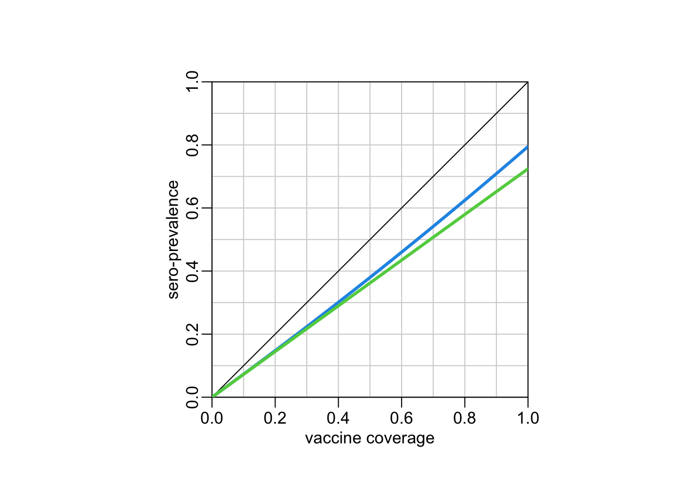

library(dplyr)
library(stringr)Model
Packages
Data
census <- readRDS("~/OneDrive - Oxford University Clinical Research Unit/data/census VNM 2019/census2019.rds")Age pyramid
Making the data:
age_dist <- census %>%
group_by(age) %>%
summarise(n = sum(n)) %>%
filter(age != "81 +") %>%
mutate_at("age", str_remove, " tuổi") %>%
mutate_at("age", as.integer) %>%
arrange(age)Plotting the age pyramid:
with(age_dist, plot(age, n, type = "h"))
A simple 2-doses vaccination model
Demographics:
Let’s consider an age cohort from 0 to \(t_3\) day-old and let’s assume that contacts within this cohort are homogeneous. Let’s assume that the exact same number of babies are born every day. In consequence, the number of children of a given age (in days) represents \(n = 1 / d\) percents of the total number of children in the 0-\(t_3\) day-old cohort.
Vaccination:
Let’s consider a vaccination with two doses at \(t_1\) and \(t_2\) and let’s call \(c_1\) the vaccine coverage of the first dose and \(c_2\) the vaccine coverage of the second dose (i.e. given the first dose). Let’s call \(e_1\) and \(e_2\) the vaccine efficiencies of the first and second doses respectively.
The percentage of the cohort with one dose thus reads:
\[ p_1 = [(t_2 - t_1) \times c_1 + (t_3 - t_2) \times c_1 \times (1 - c_2)] \times n \]
And the percentage of the cohort with two doses reads:
\[ p_2 = (t_3 - t_2) \times c_1 \times c_2 \times n \]
The cohort level of sero-protection then reads:
\[ s = p_1 \times e_1 + p_2 \times e_2 \]
Cohort level of protection
This functions uses the above equations to compute the population level of sero-protection:
protection1 <- function(t1, t2, t3, c1, c2, e1, e2) {
n <- 1 / t3
one_dose <- ((t2 - t1) * c1 + (t3 - t2) * c1 * (1 - c2)) * n
two_doses <- (t3 - t2) * c1 * c2 * n
one_dose * e1 + two_doses * e2
}Example:
protection1(t1 = 9 * 30, # timing of the first dose (in days)
t2 = 18 * 30, # timing of the second dose (in days)
t3 = 5 * 365, # duration of the cohort (in days)
c1 = .85, # vaccine coverage first dose
c2 = .85, # vaccine coverage second dose | first dose
e1 = .85, # vaccine efficiency first dose
e2 = .95 # vaccine efficiency second dose
)[1] 0.6664815